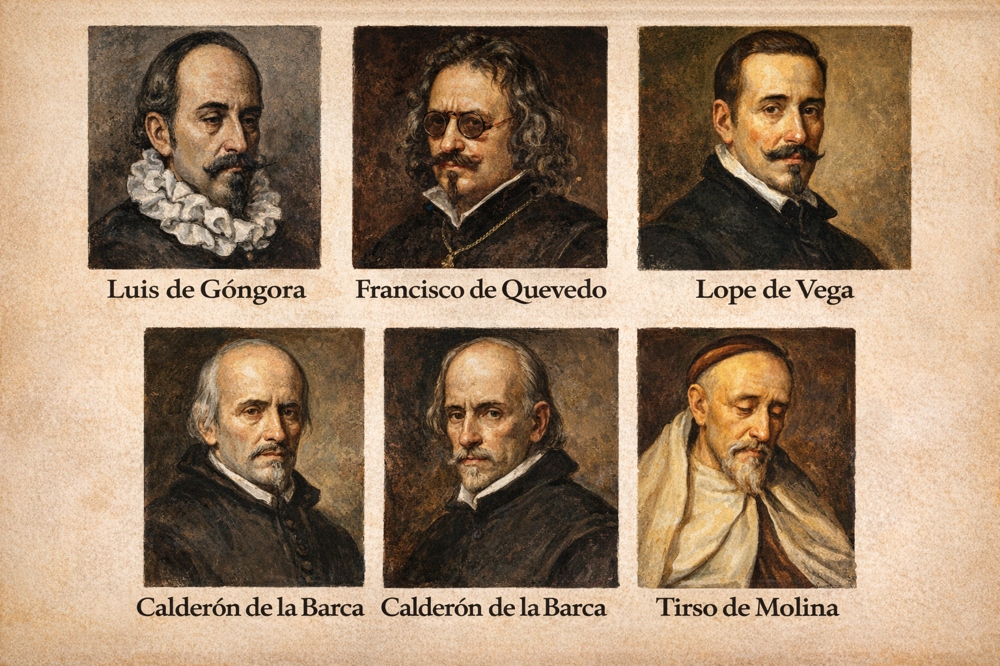

Este recurso se sitúa dentro del itinerario de aprendizaje sobre “La literatura en los Siglos de Oro II: el Barroco”. A lo largo de varias sesiones, pretende acercar al alumnado de 3º de ESO a los principales autores del Barroco español a través de un enfoque activo y competencial. En primer lugar, se revisarán las características generales del contexto histórico y cultural del siglo XVII, con el fin de comprender cómo la crisis de la época influye en la visión del mundo propia del Barroco. A continuación, se abordará el estudio de algunos de los autores más representativos, atendiendo a sus obras, estilos y aportaciones, así como a la distinción entre conceptismo y culteranismo.
A lo largo del recurso, el alumnado investigará, analizará y organizará la información para construir una visión global del periodo, estableciendo relaciones entre los autores y su contexto. Se pretende que comprendan la diversidad de estilos del Barroco y que reconozcan elementos comunes como el desengaño, la complejidad expresiva o la preocupación por el paso del tiempo. Finalmente, el trabajo culminará con la elaboración y exposición de una presentación en grupo, en el que integrarán los aprendizajes adquiridos.
Para favorecer un aprendizaje significativo, se parte de conocimientos previos y se proponen actividades variadas con distintos niveles de dificultad, combinando tareas de investigación, análisis y reflexión. Asimismo, se incluyen instrumentos de evaluación como la rúbrica, la lista de cotejo y la coevaluación, con el objetivo de aportar mayor objetividad al proceso, facilitar la retroalimentación y fomentar la implicación del alumnado en su propio aprendizaje.